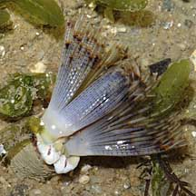
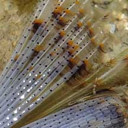
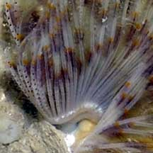

|
|
| worms text index | photo index |
| Spotted
fanworm awaiting identification* Family Sabellidae updated Oct 2016 Where seen? This small fanworm is often seen in sandy, silty areas near seagrasses on Changi. Features: Fan 3-4cm in diameter. The fan pale with faint bands of brown and orange. The feathery tentacles have tiny black spots on the 'ribs'. The body is thick and segmented with tiny bristles. Usually found alone. Sometimes this fanworm is seen at low tide with the fan still out of the tube and the fan 'feathers' stuck together into 'petals' so that it looks like a bizarre flower! |
|
 Changi, Apr 09 |
 Pasir Ris, May 09 |
 Tiny black spots on the feathery tentacles. |
 Changi, Jul 04 |
 |
*Species are difficult to positively identify without close examination.
On this website, they are grouped by external features for convenience of display.
| Spotted fanworms on Singapore shores |
| Distribution in Singapore on this wildsingapore flickr map |
On wildsingapore
flickr
|
| Other sightings on Singapore shores |